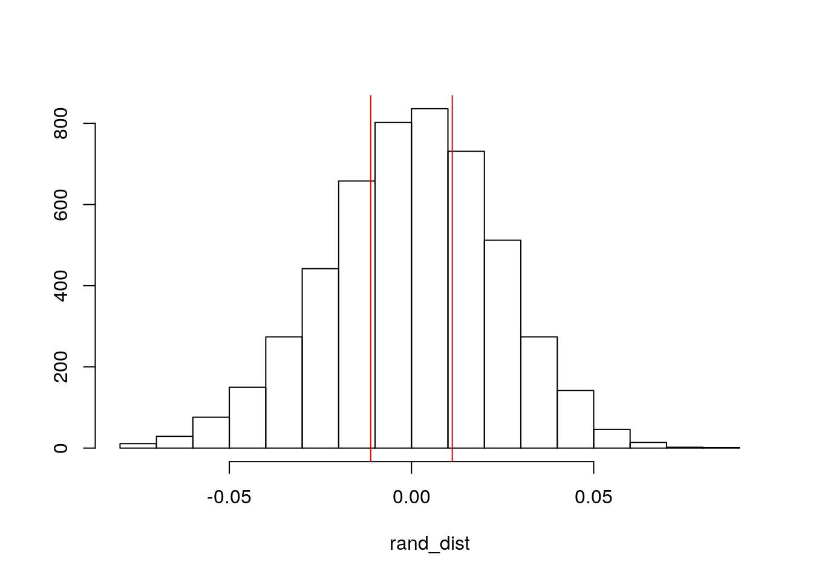
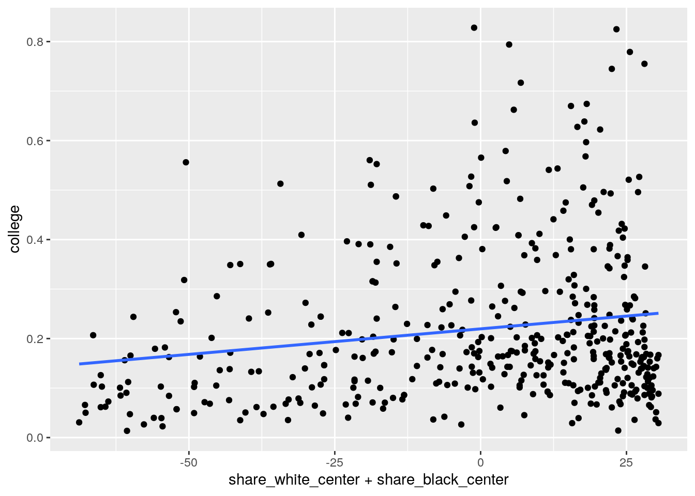
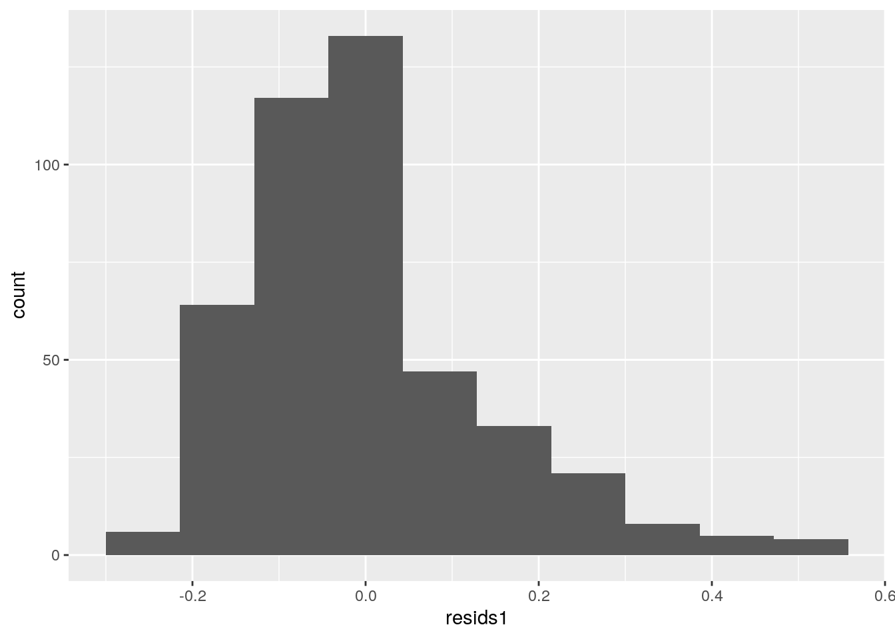
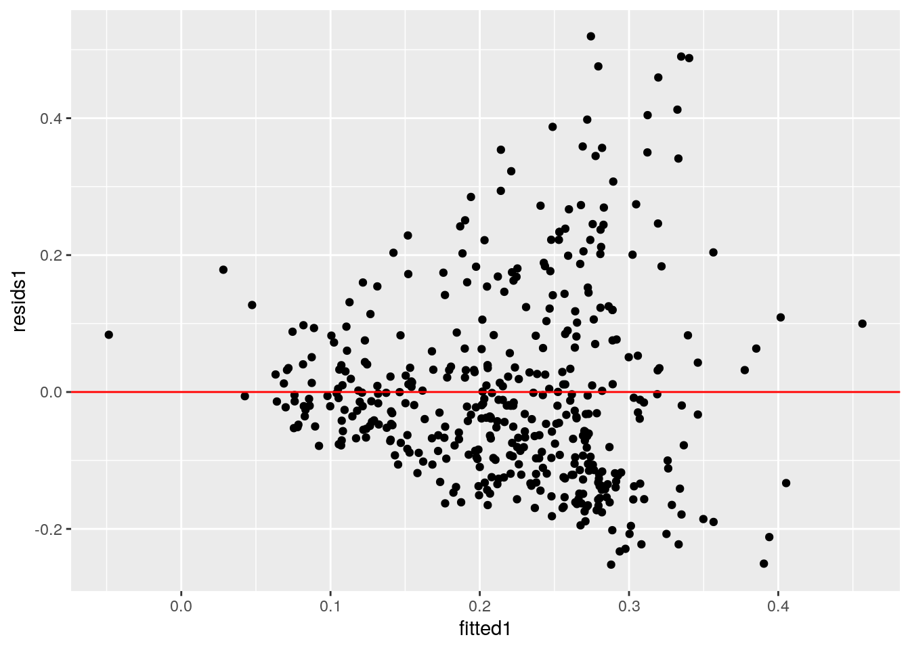
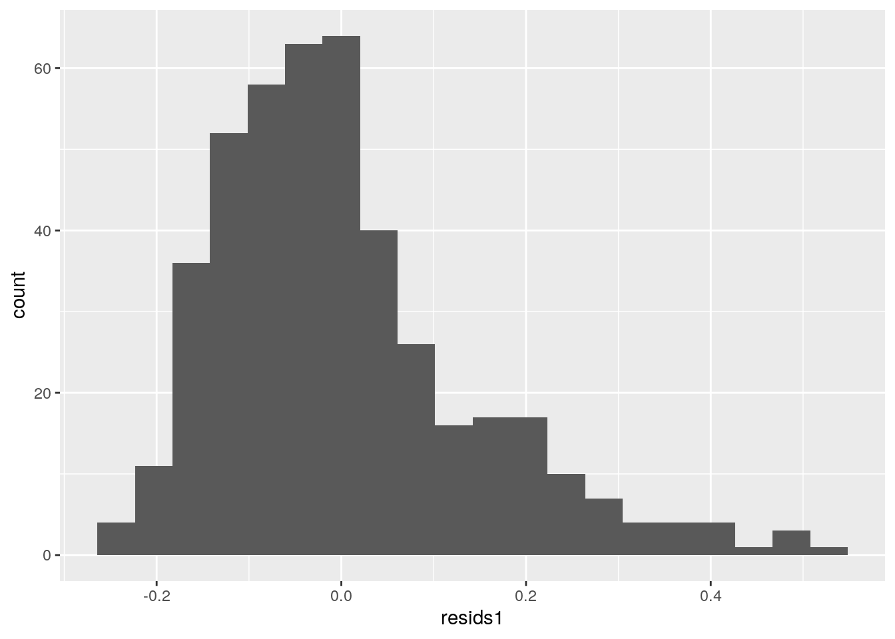
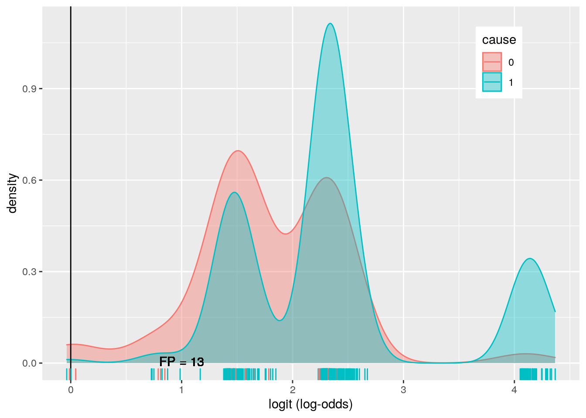
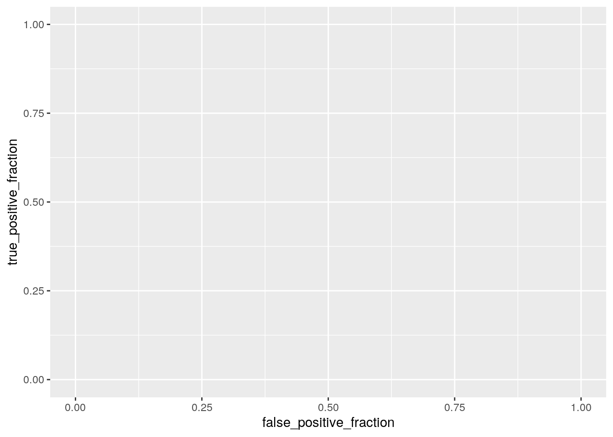

Introduction:
I found my datasets from https://github.com/fivethirtyeight/data> I picked one dataset that had the information about police killings from the year 2015. The variables I will be focusing on are whether or not a person was armed (armed), age (age), gender (gender), race/ethnicity (raceethnicity), cause (cause), the proportion of adults 25+ in the population with BA or higher (college), and the percentage of that population that is white, black, or hispanic (share_white, share_black, and share_hispanic). There are a total of 467 observations in this dataset.
library(fivethirtyeight)## Some larger datasets need to be installed separately, like senators and
## house_district_forecast. To install these, we recommend you install the
## fivethirtyeightdata package by running:
## install.packages('fivethirtyeightdata', repos =
## 'https://fivethirtyeightdata.github.io/drat/', type = 'source')pk <- police_killings
library(tidyverse)## ── Attaching packages ─────────────────────────────────────── tidyverse 1.3.0 ──## ✓ ggplot2 3.3.3 ✓ purrr 0.3.4
## ✓ tibble 3.0.4 ✓ dplyr 1.0.2
## ✓ tidyr 1.1.2 ✓ stringr 1.4.0
## ✓ readr 1.4.0 ✓ forcats 0.5.0## ── Conflicts ────────────────────────────────────────── tidyverse_conflicts() ──
## x dplyr::filter() masks stats::filter()
## x dplyr::lag() masks stats::lag()pk <- pk %>% select(age, gender, raceethnicity, armed, college, share_white, share_black, share_hispanic, cause)
pk <- pk %>% mutate(cause = str_replace(cause, "\\bDeath in custody\\b", "Other"))
pk <- pk %>% mutate(cause = str_replace(cause, "\\bTaser\\b", "Other"))
pk <- pk %>% mutate(cause = str_replace(cause, "\\bStruck by vehicle\\b", "Other"))
pk <- pk %>% mutate(armed = str_replace(armed, "\\bFirearm\\b", "Yes"))
pk <- pk %>% mutate(armed = str_replace(armed, "\\bNon-lethal firearm\\b", "Yes"))
pk <- pk %>% mutate(armed = str_replace(armed, "\\bOther\\b", "Yes"))
pk <- pk %>% mutate(armed = str_replace(armed, "\\bKnife\\b", "Yes"))
pk <- pk %>% mutate(armed = str_replace(armed, "\\bVehicle\\b", "Yes"))
pk <- pk %>% mutate(armed = str_replace(armed, "\\bDisputed\\b", "No"))
pk <- pk %>% na.omit()library(rstatix)##
## Attaching package: 'rstatix'## The following object is masked from 'package:stats':
##
## filterman1<-manova(cbind(college,share_white, share_black, share_hispanic)~cause, data=pk)
summary(man1)## Df Pillai approx F num Df den Df Pr(>F)
## cause 1 0.02703 3.0073 4 433 0.01817 *
## Residuals 436
## ---
## Signif. codes: 0 '***' 0.001 '**' 0.01 '*' 0.05 '.' 0.1 ' ' 1summary.aov(man1)## Response college :
## Df Sum Sq Mean Sq F value Pr(>F)
## cause 1 0.0056 0.0056244 0.2261 0.6346
## Residuals 436 10.8436 0.0248706
##
## Response share_white :
## Df Sum Sq Mean Sq F value Pr(>F)
## cause 1 2243 2242.59 2.5238 0.1129
## Residuals 436 387422 888.58
##
## Response share_black :
## Df Sum Sq Mean Sq F value Pr(>F)
## cause 1 2085 2085.30 3.3344 0.06853 .
## Residuals 436 272670 625.39
## ---
## Signif. codes: 0 '***' 0.001 '**' 0.01 '*' 0.05 '.' 0.1 ' ' 1
##
## Response share_hispanic :
## Df Sum Sq Mean Sq F value Pr(>F)
## cause 1 698 698.39 1.1381 0.2866
## Residuals 436 267537 613.62pk%>%group_by(cause)%>%summarize(mean(college),mean(share_white),mean(share_black),mean(share_hispanic))## `summarise()` ungrouping output (override with `.groups` argument)## # A tibble: 2 x 5
## cause `mean(college)` `mean(share_white… `mean(share_blac… `mean(share_hispa…
## <chr> <dbl> <dbl> <dbl> <dbl>
## 1 Gunsh… 0.221 52.1 17.5 22.7
## 2 Other 0.210 44.9 24.3 18.8pairwise.t.test(pk$college,pk$cause, p.adj="none")##
## Pairwise comparisons using t tests with pooled SD
##
## data: pk$college and pk$cause
##
## Gunshot
## Other 0.63
##
## P value adjustment method: nonepairwise.t.test(pk$share_white,pk$cause, p.adj="none")##
## Pairwise comparisons using t tests with pooled SD
##
## data: pk$share_white and pk$cause
##
## Gunshot
## Other 0.11
##
## P value adjustment method: nonepairwise.t.test(pk$share_black,pk$cause, p.adj="none")##
## Pairwise comparisons using t tests with pooled SD
##
## data: pk$share_black and pk$cause
##
## Gunshot
## Other 0.069
##
## P value adjustment method: nonepairwise.t.test(pk$share_hispanic,pk$cause, p.adj="none")##
## Pairwise comparisons using t tests with pooled SD
##
## data: pk$share_hispanic and pk$cause
##
## Gunshot
## Other 0.29
##
## P value adjustment method: none#1 MANOVA, 4 ANOVAs, 10 t-tests -> 0.05/15= 0.0033I have done 1 MANOVA, 4 ANOVAs, and 10 t-tests. As such, there is a higher probability of a type I error (probability = 1-.95^15 = 0.537), and I will adjust my p-value: 0.05/15= 0.0033, my adjusted p-value. Because of this, every p-value calculated is not significant, meaning there is no mean difference between groups. For the MANOVA assumptions, this dataset did have a random sample, but failed to meet the other assumptions.
pk%>%group_by(cause)%>%
summarize(means=mean(college))%>%summarize(`mean_diff:`=diff(means))## `summarise()` ungrouping output (override with `.groups` argument)## # A tibble: 1 x 1
## `mean_diff:`
## <dbl>
## 1 -0.0113rand_dist<-vector()
for(i in 1:5000){
new<-data.frame(college=sample(pk$college),cause=pk$cause)
rand_dist[i]<-mean(new[new$cause=="Gunshot",]$college)-
mean(new[new$cause=="Other",]$college)
}
{hist(rand_dist,main="",ylab=""); abline(v = c(-0.0112, 0.0112),col="red")}
mean(rand_dist>0.0112 | rand_dist < -0.0112)## [1] 0.6338The null hypothesis is that being armed was even across all proportions of people over the age of 25 with at least a bachelor’s degree that were killed by police. The alternative hypothesis is that being armed different across the proportions of people over the age of 25 with at least a bachelor’s degree. According to the randomization test, I fail to reject the null hypothesis (p-value= 0.642).
center_scale <- function(x) {
scale(x, scale = FALSE)
}
pk$share_white_center <- center_scale(pk$share_white)
pk$share_hispanic_center <- center_scale(pk$share_hispanic)
pk$share_black_center <- center_scale(pk$share_black)
fit1<-lm(college~raceethnicity+share_black_center+share_hispanic_center+share_white_center, data=pk)
summary(fit1)##
## Call:
## lm(formula = college ~ raceethnicity + share_black_center + share_hispanic_center +
## share_white_center, data = pk)
##
## Residuals:
## Min 1Q Median 3Q Max
## -0.25219 -0.09640 -0.02236 0.06208 0.51960
##
## Coefficients:
## Estimate Std. Error t value Pr(>|t|)
## (Intercept) 0.2433345 0.0456086 5.335 1.55e-07 ***
## raceethnicityBlack 0.0164202 0.0477020 0.344 0.73085
## raceethnicityHispanic/Latino -0.0078271 0.0495333 -0.158 0.87452
## raceethnicityNative American -0.2376128 0.0832457 -2.854 0.00452 **
## raceethnicityWhite -0.0483624 0.0469841 -1.029 0.30390
## share_black_center -0.0043490 0.0006490 -6.701 6.51e-11 ***
## share_hispanic_center -0.0045214 0.0006720 -6.728 5.50e-11 ***
## share_white_center -0.0019518 0.0006357 -3.070 0.00227 **
## ---
## Signif. codes: 0 '***' 0.001 '**' 0.01 '*' 0.05 '.' 0.1 ' ' 1
##
## Residual standard error: 0.1398 on 430 degrees of freedom
## Multiple R-squared: 0.2253, Adjusted R-squared: 0.2127
## F-statistic: 17.86 on 7 and 430 DF, p-value: < 2.2e-16pk%>%ggplot(aes(share_white_center+share_black_center,college))+geom_point()+geom_smooth(method = 'lm',se=F)## `geom_smooth()` using formula 'y ~ x'
library(sandwich); library(lmtest)## Loading required package: zoo##
## Attaching package: 'zoo'## The following objects are masked from 'package:base':
##
## as.Date, as.Date.numericresids1<-lm(college~raceethnicity+share_black_center+share_hispanic_center+share_white_center, data=pk)$residuals
ggplot()+geom_histogram(aes(resids1),bins=10)
fitted1<-lm(college~raceethnicity+share_black_center+share_hispanic_center+share_white_center, data=pk)$fitted.values
ggplot()+geom_point(aes(fitted1,resids1))+geom_hline(yintercept=0, color='red')
ggplot()+geom_histogram(aes(resids1), bins=20)
bptest(fit1)##
## studentized Breusch-Pagan test
##
## data: fit1
## BP = 50.615, df = 7, p-value = 1.093e-08summary(fit1)$coef[,1:4]## Estimate Std. Error t value Pr(>|t|)
## (Intercept) 0.243334502 0.0456085967 5.3352771 1.546149e-07
## raceethnicityBlack 0.016420177 0.0477019611 0.3442244 7.308458e-01
## raceethnicityHispanic/Latino -0.007827056 0.0495333413 -0.1580159 8.745184e-01
## raceethnicityNative American -0.237612784 0.0832457406 -2.8543537 4.520959e-03
## raceethnicityWhite -0.048362388 0.0469840781 -1.0293357 3.039006e-01
## share_black_center -0.004348995 0.0006489979 -6.7010923 6.505857e-11
## share_hispanic_center -0.004521391 0.0006720025 -6.7282356 5.497228e-11
## share_white_center -0.001951781 0.0006356781 -3.0703928 2.273303e-03coeftest(fit1, vcov = vcovHC(fit1))[,1:4]## Estimate Std. Error t value Pr(>|t|)
## (Intercept) 0.243334502 0.0699648236 3.4779549 5.567394e-04
## raceethnicityBlack 0.016420177 0.0709787200 0.2313394 8.171612e-01
## raceethnicityHispanic/Latino -0.007827056 0.0699170965 -0.1119477 9.109171e-01
## raceethnicityNative American -0.237612784 0.1010955595 -2.3503780 1.920535e-02
## raceethnicityWhite -0.048362388 0.0723996403 -0.6679921 5.044970e-01
## share_black_center -0.004348995 0.0007463094 -5.8273352 1.105724e-08
## share_hispanic_center -0.004521391 0.0007579218 -5.9655112 5.097742e-09
## share_white_center -0.001951781 0.0007894351 -2.4723775 1.380769e-02According to my first linear regression, these variables do not explain the likelihood of having at least a bachelor’s degree very well. The highest estimate is Black as a person’s race, which explains 1.6% of the variation in college percentage. My model explains 22.5% of the variation in college education in these cities. According to my linear regressions, the models do not pass the linearity, normality, or homoskedasticity assumptions. When running the regression with and without the SEs, the significant variables were significant before and after. Being Native American, and the percentage of white, black, and hispanic people in a city were all significant explanatory variables.
library(dplyr)
boot_dat<- sample_frac(pk, replace=T)
samp_distn<-replicate(5000, {
boot_dat <- sample_frac(pk, replace=T)
fit <- lm(college~raceethnicity+share_black_center+share_hispanic_center+share_white_center, data=boot_dat)
coef(fit)
})
resid_resamp<-replicate(5000,{
new_resids<-sample(resids1,replace=TRUE)
pk$new_y<-fitted1+new_resids
fit<-lm(college~raceethnicity+share_black_center+share_hispanic_center+share_white_center, data=boot_dat)
coef(fit) #save coefficient estimates (b0, b1, etc)
})
resid_resamp%>%t%>%as.data.frame%>%summarize_all(sd)## (Intercept) raceethnicityBlack raceethnicityHispanic/Latino
## 1 0 0 0
## raceethnicityNative American raceethnicityWhite share_black_center
## 1 0 0 0
## share_hispanic_center share_white_center
## 1 0 0After computing bootstrapped SEs, I obtained 0 values for my intercepts and explanatory variables. This would give me further evidence that I don’t have a great model for predicting the percentage of people who have earned at least a Bachelor’s degree.
class_diag<-function(probs,truth){
if(is.numeric(truth)==FALSE & is.logical(truth)==FALSE) truth<-as.numeric(truth)-1
tab<-table(factor(probs>.5,levels=c("FALSE","TRUE")),truth)
prediction<-ifelse(probs>.5,1,0)
acc=mean(truth==prediction)
sens=mean(prediction[truth==1]==1)
spec=mean(prediction[truth==0]==0)
ppv=mean(truth[prediction==1]==1)
f1=2*(sens*ppv)/(sens+ppv)
#CALCULATE EXACT AUC
ord<-order(probs, decreasing=TRUE)
probs <- probs[ord]; truth <- truth[ord]
TPR=cumsum(truth)/max(1,sum(truth))
FPR=cumsum(!truth)/max(1,sum(!truth))
dup<-c(probs[-1]>=probs[-length(probs)], FALSE)
TPR<-c(0,TPR[!dup],1); FPR<-c(0,FPR[!dup],1)
n <- length(TPR)
auc<- sum( ((TPR[-1]+TPR[-n])/2) * (FPR[-1]-FPR[-n]) )
data.frame(acc,sens,spec,ppv,auc)
}
head(pk)## # A tibble: 6 x 12
## age gender raceethnicity armed college share_white share_black
## <int> <chr> <chr> <chr> <dbl> <dbl> <dbl>
## 1 16 Male Black No 0.169 60.5 30.5
## 2 27 Male White No 0.111 53.8 36.2
## 3 26 Male White No 0.147 73.8 7.7
## 4 25 Male Hispanic/Lat… Yes 0.0501 1.2 0.6
## 5 29 Male White No 0.404 92.5 1.4
## 6 29 Male White No 0.103 7 7.7
## # … with 5 more variables: share_hispanic <dbl>, cause <chr>,
## # share_white_center[,1] <dbl>, share_hispanic_center[,1] <dbl>,
## # share_black_center[,1] <dbl>pk <- pk %>% mutate(cause = str_replace(cause, "\\bGunshot\\b", "1"))
pk <- pk %>% mutate(cause = str_replace(cause, "\\bOther\\b", "0"))
pk$cause <- as.factor(pk$cause)
fit2 <- glm(cause~raceethnicity+college, data=pk, family="binomial")
summary(fit2)##
## Call:
## glm(formula = cause ~ raceethnicity + college, family = "binomial",
## data = pk)
##
## Deviance Residuals:
## Min 1Q Median 3Q Max
## -2.8704 0.1848 0.4338 0.5810 1.1927
##
## Coefficients:
## Estimate Std. Error z value Pr(>|z|)
## (Intercept) 0.6911 0.7392 0.935 0.34981
## raceethnicityBlack 0.6800 0.7293 0.932 0.35114
## raceethnicityHispanic/Latino 3.3529 1.2257 2.736 0.00623 **
## raceethnicityNative American -0.7474 1.2269 -0.609 0.54244
## raceethnicityWhite 1.5247 0.7310 2.086 0.03700 *
## college 0.5776 0.9920 0.582 0.56040
## ---
## Signif. codes: 0 '***' 0.001 '**' 0.01 '*' 0.05 '.' 0.1 ' ' 1
##
## (Dispersion parameter for binomial family taken to be 1)
##
## Null deviance: 311.08 on 437 degrees of freedom
## Residual deviance: 288.20 on 432 degrees of freedom
## AIC: 300.2
##
## Number of Fisher Scoring iterations: 6exp(coef(fit2)) %>% round(3)## (Intercept) raceethnicityBlack
## 1.996 1.974
## raceethnicityHispanic/Latino raceethnicityNative American
## 28.587 0.474
## raceethnicityWhite college
## 4.594 1.782probs <- predict(fit2, type="response")
class_diag(probs,pk$cause)## acc sens spec ppv auc
## 1 0.8858447 0.9974227 0.02 0.8876147 0.6855155table(predict=as.numeric(probs>.5),truth=pk$cause)%>%addmargins## truth
## predict 0 1 Sum
## 0 1 1 2
## 1 49 387 436
## Sum 50 388 438pk$logit<-predict(fit2,type="link") #get log-odds for everyone
## Density plot of log-odds for each outcome:
pk%>%ggplot()+geom_density(aes(logit,color=cause,fill=cause), alpha=.4)+
theme(legend.position=c(.85,.85))+geom_vline(xintercept=0)+xlab("logit (log-odds)")+
geom_rug(aes(logit,color=cause))+
geom_text(x=-5,y=.07,label="TN = 431")+
geom_text(x=-1.75,y=.008,label="FN = 19")+
geom_text(x=1,y=.006,label="FP = 13")+
geom_text(x=5,y=.04,label="TP = 220")
library(plotROC)
ROCplot<-ggplot(pk)+geom_roc(aes(d=cause,m=probs), n.cuts=0)
ROCplot
calc_auc(ROCplot)## PANEL group AUC
## 1 1 1 NA
## 2 1 2 NAFor the coefficients, the races/ethnicities represent the chance of being killed by a gunshot as opposed to another method for each race (.68, 3.35, -0.75, and 1.52, for Black, Hispanic/Latino, Native American, and White, respectively). Additionally, for every percent increase in overall population of people over the age f 25 who have earned at least a bachelor’s degree, there is a .58 increase in the chance of being shot. However, the only significant coefficients are the races/ethnicities of Hispanic/Latino and White. The AUC is 0.6855, the accuracy is 0.8858, the sensitivity is 0.9974, the specificity is 0.02, and the precision is 0.8876. Based on these values, it would appear as though my model is poorly fitted to the data. Even though the accuracy, sensitivity, and precision are relatively high, it doesn’t seem as though these explanatory variables can actually explain the likelihood of being shot. According to the ROC graph and value (0.6855), this model does very poorly in predicting whether or not a person will be shot.
fit3 <- glm(cause~(.), data=pk, family="binomial")
summary(fit3)##
## Call:
## glm(formula = cause ~ (.), family = "binomial", data = pk)
##
## Deviance Residuals:
## Min 1Q Median 3Q Max
## -2.7151 0.2182 0.3863 0.5241 1.6643
##
## Coefficients: (4 not defined because of singularities)
## Estimate Std. Error z value Pr(>|z|)
## (Intercept) 0.73415 1.54159 0.476 0.63391
## age -0.04174 0.01246 -3.349 0.00081 ***
## genderMale 0.32655 0.69038 0.473 0.63621
## raceethnicityBlack 0.05539 0.79432 0.070 0.94441
## raceethnicityHispanic/Latino 2.69768 1.28047 2.107 0.03514 *
## raceethnicityNative American -0.99613 1.33815 -0.744 0.45663
## raceethnicityWhite 1.20926 0.79404 1.523 0.12778
## armedYes -0.38211 0.39478 -0.968 0.33309
## college 0.56040 1.17305 0.478 0.63284
## share_white 0.02405 0.01233 1.950 0.05116 .
## share_black 0.02078 0.01304 1.593 0.11110
## share_hispanic 0.02044 0.01433 1.426 0.15384
## share_white_center NA NA NA NA
## share_hispanic_center NA NA NA NA
## share_black_center NA NA NA NA
## logit NA NA NA NA
## ---
## Signif. codes: 0 '***' 0.001 '**' 0.01 '*' 0.05 '.' 0.1 ' ' 1
##
## (Dispersion parameter for binomial family taken to be 1)
##
## Null deviance: 311.08 on 437 degrees of freedom
## Residual deviance: 274.10 on 426 degrees of freedom
## AIC: 298.1
##
## Number of Fisher Scoring iterations: 6exp(coef(fit3)) %>% round(3)## (Intercept) age
## 2.084 0.959
## genderMale raceethnicityBlack
## 1.386 1.057
## raceethnicityHispanic/Latino raceethnicityNative American
## 14.845 0.369
## raceethnicityWhite armedYes
## 3.351 0.682
## college share_white
## 1.751 1.024
## share_black share_hispanic
## 1.021 1.021
## share_white_center share_hispanic_center
## NA NA
## share_black_center logit
## NA NAprobs2 <- predict(fit3, type="response")
class_diag(probs2,pk$cause)## acc sens spec ppv auc
## 1 0.8835616 0.9948454 0.02 0.8873563 0.7462887table(predict=as.numeric(probs2>.5),truth=pk$cause)%>%addmargins## truth
## predict 0 1 Sum
## 0 1 2 3
## 1 49 386 435
## Sum 50 388 438set.seed(1234)
k=10
data<-pk[sample(nrow(pk)),]
folds<-cut(seq(1:nrow(pk)),breaks=k,labels=F)
diags<-NULL
for(i in 1:k){
train<-data[folds!=i,]
test<-data[folds==i,]
truth<-test$cause
fit3<-glm(cause~(.), data=pk, family="binomial")
probs2<-predict(fit3,newdata = test,type="response")
diags<-rbind(diags,class_diag(probs2,truth))
}## Warning in predict.lm(object, newdata, se.fit, scale = 1, type = if (type == :
## prediction from a rank-deficient fit may be misleading
## Warning in predict.lm(object, newdata, se.fit, scale = 1, type = if (type == :
## prediction from a rank-deficient fit may be misleading
## Warning in predict.lm(object, newdata, se.fit, scale = 1, type = if (type == :
## prediction from a rank-deficient fit may be misleading
## Warning in predict.lm(object, newdata, se.fit, scale = 1, type = if (type == :
## prediction from a rank-deficient fit may be misleading
## Warning in predict.lm(object, newdata, se.fit, scale = 1, type = if (type == :
## prediction from a rank-deficient fit may be misleading
## Warning in predict.lm(object, newdata, se.fit, scale = 1, type = if (type == :
## prediction from a rank-deficient fit may be misleading
## Warning in predict.lm(object, newdata, se.fit, scale = 1, type = if (type == :
## prediction from a rank-deficient fit may be misleading
## Warning in predict.lm(object, newdata, se.fit, scale = 1, type = if (type == :
## prediction from a rank-deficient fit may be misleading
## Warning in predict.lm(object, newdata, se.fit, scale = 1, type = if (type == :
## prediction from a rank-deficient fit may be misleading
## Warning in predict.lm(object, newdata, se.fit, scale = 1, type = if (type == :
## prediction from a rank-deficient fit may be misleadingsummarize_all(diags,mean)## acc sens spec ppv auc
## 1 0.8835095 0.9950549 0.01111111 0.8873578 0.7293165library(glmnet)## Loading required package: Matrix##
## Attaching package: 'Matrix'## The following objects are masked from 'package:tidyr':
##
## expand, pack, unpack## Loaded glmnet 4.0-2y<-as.matrix(pk$cause)
x<-model.matrix(cause~(.),data=pk)[,-1]
head(x)## age genderMale raceethnicityBlack raceethnicityHispanic/Latino
## 1 16 1 1 0
## 2 27 1 0 0
## 3 26 1 0 0
## 4 25 1 0 1
## 5 29 1 0 0
## 6 29 1 0 0
## raceethnicityNative American raceethnicityWhite armedYes college
## 1 0 0 0 0.16850951
## 2 0 1 0 0.11140236
## 3 0 1 0 0.14731227
## 4 0 0 1 0.05013293
## 5 0 1 0 0.40395421
## 6 0 1 0 0.10295519
## share_white share_black share_hispanic share_white_center
## 1 60.5 30.5 5.6 9.250685
## 2 53.8 36.2 0.5 2.550685
## 3 73.8 7.7 16.8 22.550685
## 4 1.2 0.6 98.8 -50.049315
## 5 92.5 1.4 1.7 41.250685
## 6 7.0 7.7 79.0 -44.249315
## share_hispanic_center share_black_center logit
## 1 -16.683562 12.23425 1.468437
## 2 -21.783562 17.93425 2.280193
## 3 -5.483562 -10.56575 2.300934
## 4 76.516438 -17.66575 4.073034
## 5 -20.583562 -16.86575 2.449165
## 6 56.716438 -10.56575 2.275314cv <- cv.glmnet(x,y, family="binomial")
lasso<-glmnet(x,y,family="binomial",lambda=cv$lambda.1se)
coef(lasso)## 16 x 1 sparse Matrix of class "dgCMatrix"
## s0
## (Intercept) 2.048982e+00
## age .
## genderMale .
## raceethnicityBlack .
## raceethnicityHispanic/Latino .
## raceethnicityNative American .
## raceethnicityWhite .
## armedYes .
## college .
## share_white .
## share_black .
## share_hispanic .
## share_white_center .
## share_hispanic_center .
## share_black_center .
## logit 3.076695e-16fit4 <- glm(cause~age, data=pk, family="binomial")
summary(fit4)##
## Call:
## glm(formula = cause ~ age, family = "binomial", data = pk)
##
## Deviance Residuals:
## Min 1Q Median 3Q Max
## -2.3218 0.4007 0.4533 0.5172 0.8654
##
## Coefficients:
## Estimate Std. Error z value Pr(>|z|)
## (Intercept) 3.17055 0.47120 6.729 1.71e-11 ***
## age -0.02869 0.01089 -2.634 0.00843 **
## ---
## Signif. codes: 0 '***' 0.001 '**' 0.01 '*' 0.05 '.' 0.1 ' ' 1
##
## (Dispersion parameter for binomial family taken to be 1)
##
## Null deviance: 311.08 on 437 degrees of freedom
## Residual deviance: 304.39 on 436 degrees of freedom
## AIC: 308.39
##
## Number of Fisher Scoring iterations: 5exp(coef(fit4)) %>% round(3)## (Intercept) age
## 23.821 0.972probs3 <- predict(fit4, type="response")
class_diag(probs3,pk$cause)## acc sens spec ppv auc
## 1 0.8858447 1 0 0.8858447 0.6174227set.seed(1234)
k2=10
data2<-pk[sample(nrow(pk)),]
folds2<-cut(seq(1:nrow(pk)),breaks=k,labels=F)
diags2<-NULL
for(i in 1:k){
train<-data2[folds!=i,]
test<-data2[folds==i,]
truth<-test$cause
fit4<-glm(cause~age, data=pk, family="binomial")
probs3<-predict(fit4,newdata = test,type="response")
diags2<-rbind(diags2,class_diag(probs3,truth))
}
summarize_all(diags2,mean)## acc sens spec ppv auc
## 1 0.8858351 1 0 0.8858351 0.629627The AUC is 0.757, the accuracy is 0.881, the sensitivity is 0.992, the specificity is 0.02, and the precision is 0.887. While the accuracy, sensitivity, and precision have all decreased by a small amount, the auc is much higher because it’s fit to the data. Regardless, this is still not a great model for predicting the likelihood of being killed by gunshot as opposed to something else. AFter running the 10-fold CV, I obtained an AUC value of 0.735 which is lower than the previous AUC. This suggests that my model is overfitted by a small amount, but still not very good at predicting the likelihood of being killed by gunshot. After performing a LASSO, only the age variable is retained. For the final out-of-sample AUC, I obtained a value of 0.6296, which is much lower than all of the other AUC’s calculated thus far. While the sensitivity is perfect, the accuracy is the same as the model from #5 and the precision is lower. Overall, this is a terrible model for predicting the likelihood of being killed by a gunshot.
echo “print(‘this is my test file before I build my website’)” > testfile.py
git init #initialize git respository in your home directory git add testfile.py #replace testfile.py with any file in your home directory you want to upload: git commit -m “test commit” #this commits the file and adds a message (required) git remote add origin https://github.com/tylerz98/test_repo.git
git remote set-url origin https://github.com/YourGithubUsername/YourGithubUsername.github.io.git
blogdown::serve_site()